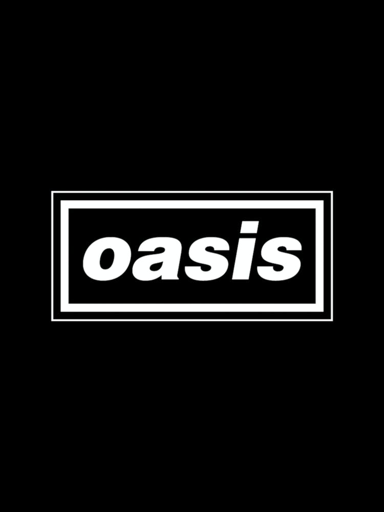
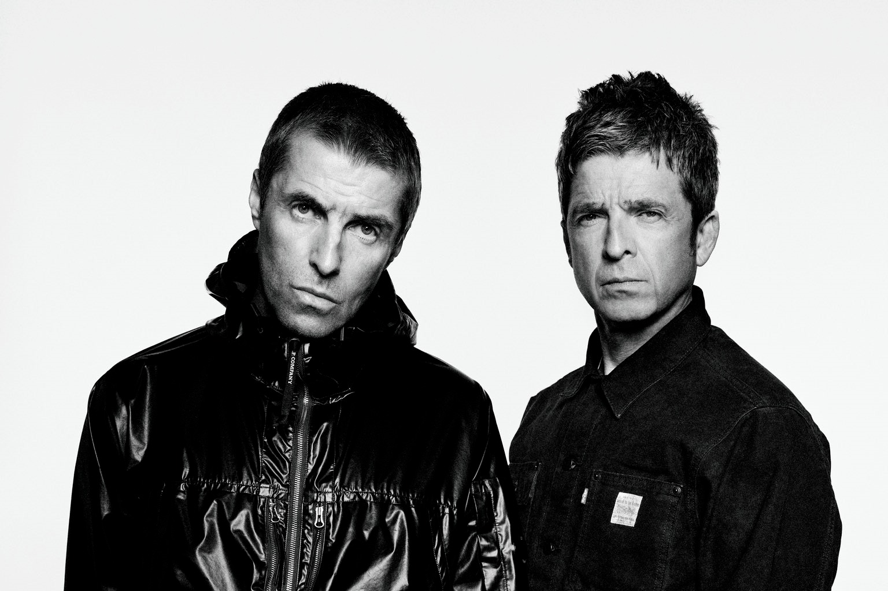
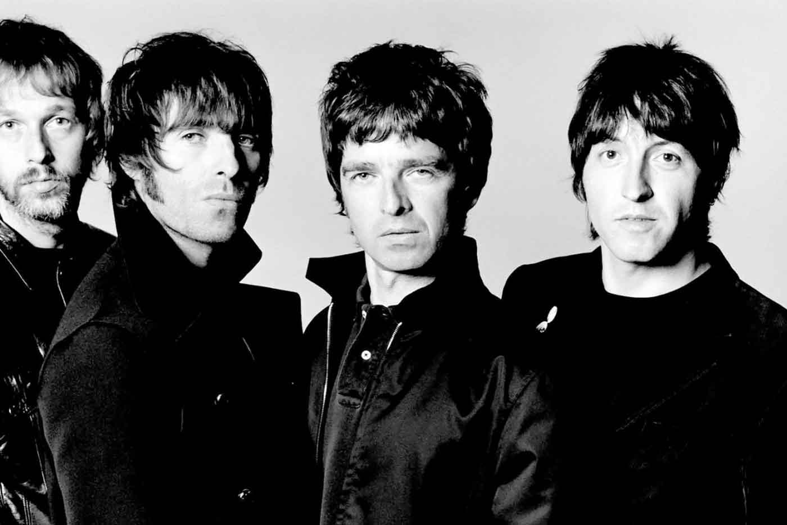
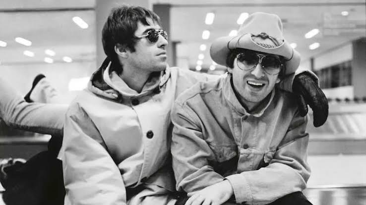
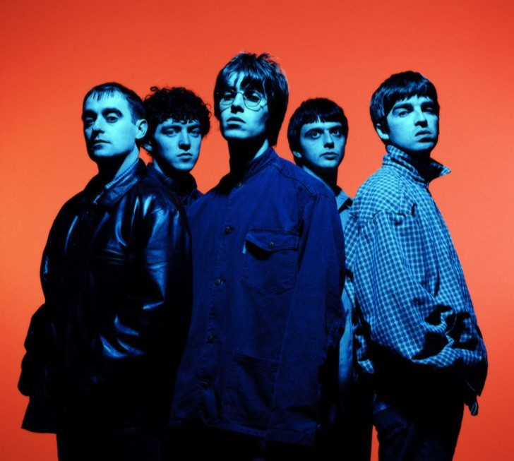
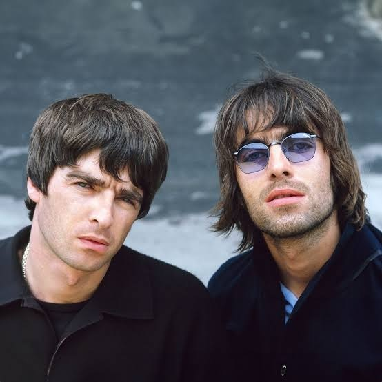

Oasis es una influyente banda de rock formada en Mánchester en 1991 y liderada por los hermanos Liam y Noel Gallagher. Se convirtieron en los máximos referentes del movimiento Britpop de los años 90 gracias a sus melodías de guitarra inspiradas en The Beatles y su actitud rebelde. Alcanzaron la fama mundial con sus primeros discos, Definitely Maybe (1994) y (What's the Story) Morning Glory? (1995), vendiendo decenas de millones de copias. Tras separarse en 2009 debido a las constantes peleas entre los hermanos, sorprendieron al mundo anunciando su esperado regreso a los escenarios en 2024, siendo incluidos en el Salón de la Fama del Rock and Roll en 2026.




Today is gonna be the day That they're gonna throw it back to you By now you should've somehow Realized what you gotta do I don't believe that anybody Feels the way I do, about you now Backbeat, the word is on the street That the fire in your heart is out I'm sure you've heard it all before But you never really had a doubt I don't believe that anybody Feels the way I do about you now And all the roads we have to walk are winding And all the lights that lead us there are blinding There are many things that I Would like to say to you, but I don't know how Because maybe, you're gonna be the one that saves me And after all, you're my wonderwall Today was gonna be the day But they'll never throw it back to you By now you should've somehow Realized what you're not to do I don't believe that anybody Feels the way I do, about you now And all the roads that lead you there were winding And all the lights that light the way are blinding There are many things that I Would like to say to you, but I don't know how Because maybe, you're gonna be the one that saves me And after all, you're my wonderwall Today was gonna be the day But they'll never throw it back to you By now you should've somehow Realized what you're not to do I don't believe that anybody Feels the way I do, about you now I said maybe, you're gonna be the one that saves me You're gonna be the one that saves me You're gonna be the one that saves me
Slip inside the eye of your mind Don't you know you might find A better place to play? You said that you'd never been But all the things that you've seen Will slowly fade away So I start a revolution from my bed 'Cause you said the brains I had went to my head Step outside, summertime's in bloom Stand up beside the fireplace Take that look from off your face You ain't ever gonna burn my heart out And so Sally can wait She knows it's too late As we're walking on by Her soul slides away But don't look back in anger I heard you say Take me to the place where you go Where nobody knows If it's night or day But please don't put your life in the hands Of a rock and roll band Who'll throw it all away I'm gonna start a revolution from my bed 'Cause you said the brains I had went to my head Step outside 'cause summertime's in bloom Stand up beside the fireplace Take that look from off your face 'Cause you ain't ever gonna burn my heart out And so Sally can wait She knows it's too late As she's walking on by My soul slides away But don't look back in anger I heard you say So Sally can wait She knows it's too late As we're walking on by Her soul slides away But don't look back in anger I heard you say So Sally can wait She knows it's too late As she's walking on by My soul slides away But don't look back in anger Don't look back in anger I heard you say At least not today
How many special people change? How many lives are livin' strange? Where were you while we were gettin' high? Slowly walkin' down the hall Faster than a cannonball Where were you while we were gettin' high? Someday you will find me Caught beneath the landslide In a champagne supernova in the sky Someday you will find me Caught beneath the landslide In a champagne supernova A champagne supernova in the sky Wake up the dawn and ask her why A dreamer dreams she never dies Wipe that tear away now from your eye Slowly walkin' down the hall Faster than a cannonball Where were you while we were gettin' high? Someday you will find me Caught beneath the landslide In a champagne supernova in the sky Someday you will find me Caught beneath the landslide In a champagne supernova A champagne supernova 'Cause people believe That they're gonna get away for the summer But you and I, we live and die The world's still spinnin' 'round, we don't know why Why, why, why, why How many special people change? How many lives are livin' strange? Where were you while we were gettin' high? Slowly walkin' down the hall Faster than a cannonball Where were you while we were gettin' high? Someday you will find me Caught beneath the landslide In a champagne supernova in the sky Someday you will find me Caught beneath the landslide In a champagne supernova A champagne supernova 'Cause people believe That they're gonna get away for the summer But you and I, we live and die The world's still spinnin' 'round, we don't know why Why, why, why, why Na, na, na Na, na, na Na, na, na Na, na, na Na, na, na Na, na, na Na, na Na, na Na, na, na How many special people change? How many lives are livin' strange? Where were you while we were gettin' high? We were gettin' high We were gettin' high We were gettin' high We were gettin' high We were gettin' high We were gettin' high We were gettin' high We were gettin' high We were gettin' high
Oh yeah Maybe I don't really wanna know How your garden grows 'Cause I just wanna fly Lately, did you ever feel the pain In the morning rain As it soaks you to the bone? Maybe I just wanna fly Wanna live, I don't wanna die Maybe I just wanna breathe Maybe I just don't believe Maybe you're the same as me We see things they'll never see You and I are gonna live forever I said maybe I don't really wanna know How your garden grows 'Cause I just wanna fly Lately, did you ever feel the pain In the morning rain As it soaks you to the bone? Maybe I will never be All the things that I wanna be Now is not the time to cry Now's the time to find out why I think you're the same as me We see things they'll never see You and I are gonna live forever Maybe I don't really wanna know How your garden grows 'Cause I just wanna fly Lately, did you ever feel the pain In the morning rain As it soaks you to the bone? Maybe I just wanna fly Wanna live, I don't wanna die Maybe I just wanna breathe Maybe I just don't believe Maybe you're the same as me We see things they'll never see You and I are gonna live forever Gonna live forever Gonna live forever We're gonna live forever Gonna live forever Gonna live forever Gonna live forever
Hold up Hold on Don't be scared You'll never change what's been and gone May your smile (may your smile) Shine on (shine on) Don't be scared (don't be scared) Your destiny may keep you warm 'Cause all of the stars are fading away Just try not to worry, you'll see them someday Take what you need, and be on your way And stop crying your heart out Get up (get up) Come on (come on) Why're you scared? (I'm not scared) You'll never change what's been and gone 'Cause all of the stars are fading away Just try not to worry, you'll see them someday Take what you need, and be on your way And stop crying your heart out 'Cause all of the stars are fading away Just try not to worry, you'll see them someday Just take what you need, and be on your way And stop crying your heart out We're all of the stars, we're fading away Just try not to worry, you'll see us some day Just take what you need, and be on your way And stop crying your heart out Stop crying your heart out Stop crying your heart out Stop crying your heart out
Estado: Entradas agotadas
Estado: Entradas agotadas
Estado: Entradas agotadas